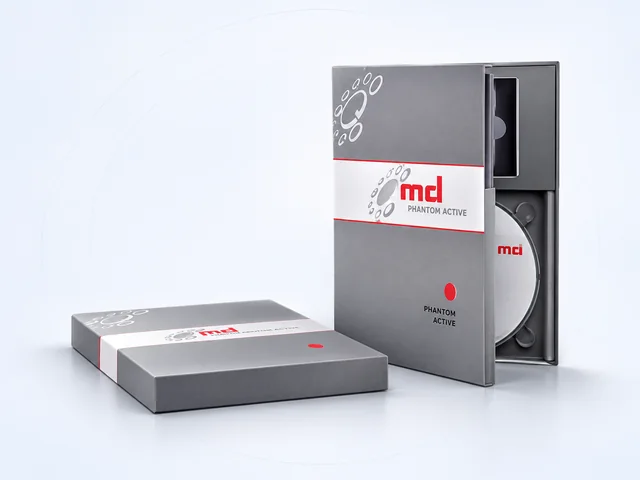

Программное подключение
Система подключается к совместимой АТС через программный интерфейс и не требует отдельного физического подключения к каждой записываемой линии.
Активная централизованная запись через программный интерфейс АТС
Phantom Active записывает переговоры через интеграцию с совместимой АТС без физического подключения регистратора к каждой контролируемой линии. Система позволяет централизованно управлять списком записываемых абонентов и использовать автоматическую или выборочную запись в поддерживаемой конфигурации.
Количественные параметры опубликованы для документированной конфигурации Phantom Active с Siemens HiPath 4000 и не должны автоматически переноситься на другие АТС.

Визуализация программного решения; архитектура подключения зависит от АТС
Принцип работы
В традиционной схеме регистратор получает аудиосигнал через физические линии или интерфейсные платы. Phantom Active использует программное взаимодействие с поддерживаемой АТС и получает разговоры через предусмотренный архитектурой АТС механизм записи.
Система подключается к совместимой АТС через программный интерфейс и не требует отдельного физического подключения к каждой записываемой линии.
Список контролируемых устройств можно изменять программно без переподключения кабелей.
При поддерживаемой архитектуре одна система может использоваться для централизованной записи абонентов распределённой сети связи.
Режимы записи
В опубликованной конфигурации запись может автоматически начинаться при начале разговора.
Запись может запускаться или останавливаться действием пользователя – например, кнопкой на телефонном аппарате, если это предусмотрено интеграцией.
Администратор может задавать условия и изменять список записываемых устройств без физического переподключения.
Сценарии разговора
В опубликованной конфигурации запись может продолжаться при переводе разговора с одного абонента на другого.
Поддерживается запись многопользовательских разговоров и привязка участников в пределах возможностей интеграции с АТС.
Система использует служебную информацию АТС, чтобы отслеживать изменения участников и маршрут вызова.
Опубликованная спецификация HiPath 4000 заявляет привязку номеров участников разговора; для другой АТС полнота метаданных должна подтверждаться отдельно.
Технические данные
Параметры выше опубликованы МДИС для Phantom Active в архитектуре Siemens HiPath 4000. Для OpenScape или другой совместимой АТС ограничения и состав функций необходимо подтверждать по документации конкретной интеграции.
Исполнения
Опубликованная базовая конфигурация для централизованной записи абонентов Siemens HiPath 4000.
Вариант для централизованной записи абонентов программной АТС Siemens/OpenScape Voice.
Вариант для записи разговоров диспетчерских пультов Siemens HiPath Trading / OpenScape Xpert через централизованную архитектуру по E1 или IP.
Подбор интеграции
Phantom Active создавался и документировался для экосистемы Siemens HiPath/OpenScape. Наличие CSTA или IP-телефонии само по себе не гарантирует совместимость с другой АТС: важны реализация протокола, механизм передачи аудио, версия станции и набор доступных служебных событий.
Для новой интеграции необходимо получить у МДИС подтверждение совместимости с конкретной моделью и версией АТС и определить, какие функции – запись, метаданные, перевод вызова, конференции и выборочная запись – доступны в этой конфигурации.
Развитие
МДИС выпустила Phantom Active в 2012 году как новое поколение активной записи. В последующие годы развивались варианты для HiPath/OpenScape и диспетчерских систем.
В январе 2022 года МДИС сообщила о технологическом партнёрстве уровня Advanced с Atos Unify для работы с OpenScape 4000, OpenScape Voice и OpenScape Xpert при селективной регистрации переговоров с помощью Phantom Active.
Указанное партнёрство подтверждено публикацией на момент 2022 года; его действующий статус в 2026 году требует отдельного подтверждения.
История развития МДИСДокументация
Наличие исторического руководства не подтверждает совместимость с любой современной версией АТС.
Обучение
МДИС публикует курс по внедрению и интеграции Phantom Active. Активная запись должна настраиваться с учётом конкретной телефонной платформы.
Программы обучения МДИСIP-телефония
В материалах МДИС активный режим IP-записи связан с семейством Phantom Active. В отличие от пассивного захвата сетевого трафика, активная схема использует интеграцию с АТС и её механизмами управления и передачи аудио.
Активная и пассивная запись IP-телефонииРоссийская промышленная продукция
МЦКРС «Фантом» внесён в реестр российской промышленной продукции Минпромторга. Реестровый номер – 10838442. Дата внесения – 21 мая 2026 года. Опубликованный срок действия заключения – до 20 мая 2029 года.
Реестровая запись относится к комплексу «Фантом» в целом; применимость к конкретной поставке Phantom Active необходимо подтверждать по спецификации проекта.
Публикация МДИС о реестреВыбор решения
Подходит для сценариев, где поддерживаемая АТС может централизованно передавать аудио и служебную информацию системе записи.
Полезен, когда состав записываемых устройств нужно менять программно без физического переподключения линий.
Может применяться для централизованной записи географически распределённых абонентов в пределах поддерживаемой архитектуры АТС.
Другие способы регистрации
Если АТС не поддерживает необходимый программный интерфейс или механизм передачи аудио, проект может потребовать пассивную IP-запись, интерфейсные платы Phantom или другой способ подключения.
Другие продукты
Инженерная консультация
Для оценки нужны производитель и версия АТС, используемые интерфейсы интеграции, количество абонентов и одновременных разговоров, сценарии перевода и конференций и требования к автоматической или выборочной записи. Инженеры МДИС помогут определить, подходит ли Phantom Active и какие функции доступны в конкретной конфигурации.